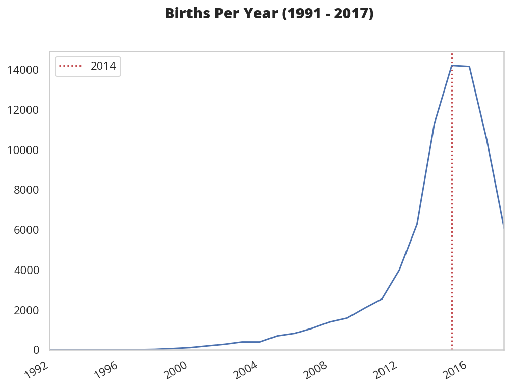
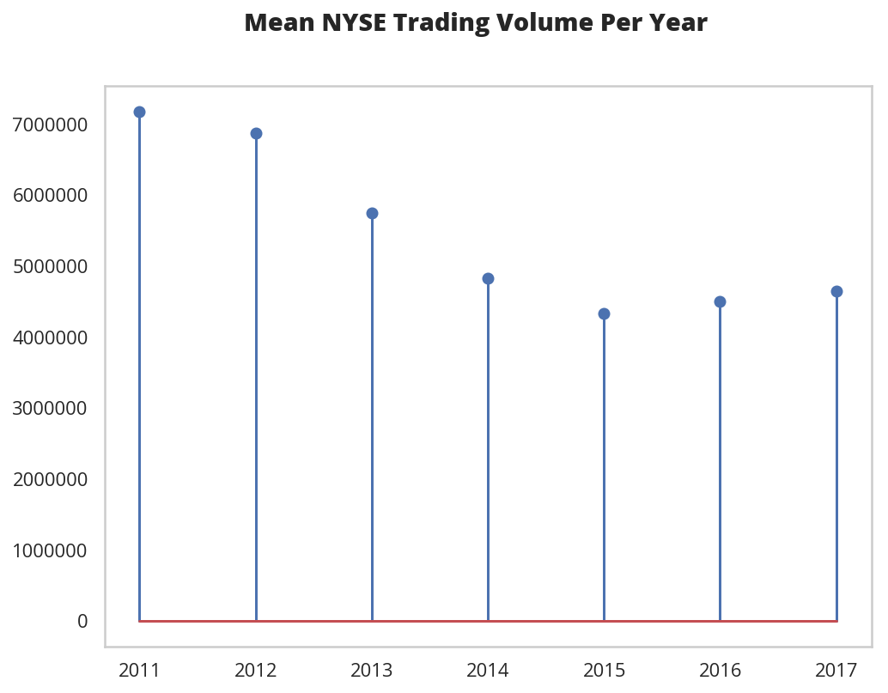
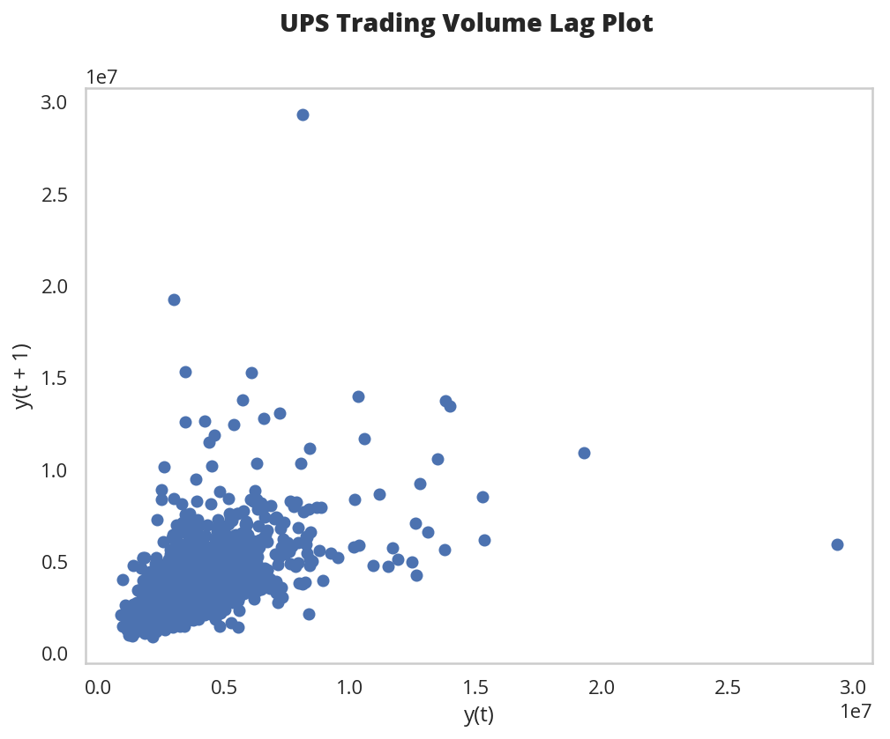

Kaggle On Time-Series Visualization
Table of Contents
Introduction
This is a walk-through of the kaggle notebook on Time-Series Plotting by Aleksey Bilogur.
Set Up
Imports
From Python
from datetime import datetime
from functools import partial
from pathlib import Path
import os
From PyPi
from dotenv import load_dotenv
from pandas.plotting import autocorrelation_plot, lag_plot
from tabulate import tabulate
import matplotlib.pyplot as pyplot
import pandas
import seaborn
Plotting
get_ipython().run_line_magic('matplotlib', 'inline')
get_ipython().run_line_magic('config', "InlineBackend.figure_format = 'retina'")
seaborn.set(style="whitegrid",
rc={"axes.grid": False,
"font.family": ["sans-serif"],
"font.sans-serif": ["Open Sans", "Latin Modern Sans", "Lato"],
"figure.figsize": (8, 6)},
font_scale=1)
Setup Libraries
load_dotenv()
table = partial(tabulate, headers="keys", tablefmt="orgtbl")
kaggle_path = Path(os.environ.get("KAGGLE")).expanduser()
assert kaggle_path.is_dir()
The Data
New York Stock Exchange Prices
nyse_path = kaggle_path.joinpath("nyse/prices.csv")
assert nyse_path.is_file()
nyse = pandas.read_csv(nyse_path, parse_dates=["date"])
nyse.info()
<class 'pandas.core.frame.DataFrame'> RangeIndex: 851264 entries, 0 to 851263 Data columns (total 7 columns): date 851264 non-null datetime64[ns] symbol 851264 non-null object open 851264 non-null float64 close 851264 non-null float64 low 851264 non-null float64 high 851264 non-null float64 volume 851264 non-null float64 dtypes: datetime64[ns](1), float64(5), object(1) memory usage: 45.5+ MB/home/athena/.virtualenvs/Visions-Voices-Data/bin/python3: No module named virtualfish
nyse = nyse.set_index("date")
print(table(nyse.head()))
| date | symbol | open | close | low | high | volume |
|---|---|---|---|---|---|---|
| 2016-01-05 00:00:00 | WLTW | 123.43 | 125.84 | 122.31 | 126.25 | 2.1636e+06 |
| 2016-01-06 00:00:00 | WLTW | 125.24 | 119.98 | 119.94 | 125.54 | 2.3864e+06 |
| 2016-01-07 00:00:00 | WLTW | 116.38 | 114.95 | 114.93 | 119.74 | 2.4895e+06 |
| 2016-01-08 00:00:00 | WLTW | 115.48 | 116.62 | 113.5 | 117.44 | 2.0063e+06 |
| 2016-01-11 00:00:00 | WLTW | 117.01 | 114.97 | 114.09 | 117.33 | 1.4086e+06 |
The notebook describes this as an example of a "strong" date case because the dates act as an explicit index for the data and are, in this case, an aggregate for a day of trading.
UPS
Some of the correlational plots don't show anything meaningful when you use the market as a whole (I guess because different stocks are moving in different directions) so I'm going to pull out the UPS stock information to use later.
/home/athena/.virtualenvs/Visions-Voices-Data/bin/python3: No module named virtualfishups = nyse[nyse.symbol=="UPS"]
print(ups.shape)
(1762, 6)
Shelter Outcomes
shelter_path = kaggle_path.joinpath(
"austin-animal-center-shelter-outcomes/aac_shelter_outcomes.csv")
assert shelter_path.is_file()
shelter = pandas.read_csv(shelter_path, parse_dates=["datetime", "date_of_birth"])
shelter.info()
<class 'pandas.core.frame.DataFrame'> RangeIndex: 78256 entries, 0 to 78255 Data columns (total 12 columns): age_upon_outcome 78248 non-null object animal_id 78256 non-null object animal_type 78256 non-null object breed 78256 non-null object color 78256 non-null object date_of_birth 78256 non-null datetime64[ns] datetime 78256 non-null datetime64[ns] monthyear 78256 non-null object name 54370 non-null object outcome_subtype 35963 non-null object outcome_type 78244 non-null object sex_upon_outcome 78254 non-null object dtypes: datetime64[ns](2), object(10) memory usage: 7.2+ MB
Some of the columns are only identifiers (like a name) so we'll drop them to make it easier to inspect the data (although we aren't really going to do anything with it here anyway).
/home/athena/.virtualenvs/Visions-Voices-Data/bin/python3: No module named virtualfishshelter = shelter[["outcome_type", "age_upon_outcome", "datetime",
"animal_type", "breed", "color", "sex_upon_outcome",
"date_of_birth"]]
print(table(shelter.head()))
| outcome_type | age_upon_outcome | datetime | animal_type | breed | color | sex_upon_outcome | date_of_birth | |
|---|---|---|---|---|---|---|---|---|
| 0 | Transfer | 2 weeks | 2014-07-22 16:04:00 | Cat | Domestic Shorthair Mix | Orange Tabby | Intact Male | 2014-07-07 00:00:00 |
| 1 | Transfer | 1 year | 2013-11-07 11:47:00 | Dog | Beagle Mix | White/Brown | Spayed Female | 2012-11-06 00:00:00 |
| 2 | Adoption | 1 year | 2014-06-03 14:20:00 | Dog | Pit Bull | Blue/White | Neutered Male | 2013-03-31 00:00:00 |
| 3 | Transfer | 9 years | 2014-06-15 15:50:00 | Dog | Miniature Schnauzer Mix | White | Neutered Male | 2005-06-02 00:00:00 |
| 4 | Euthanasia | 5 months | 2014-07-07 14:04:00 | Other | Bat Mix | Brown | Unknown | 2014-01-07 00:00:00 |
The notebook describes this as an example of a "weak" date case because the dates are only there for record-keeping and, while they might be significant for modeling, aren't acting as an index for the records.
Cryptocurrency
currency_path = kaggle_path.joinpath("all-crypto-currencies/crypto-markets.csv")
assert currency_path.is_file()
currency = pandas.read_csv(currency_path, parse_dates=["date"])
currency = currency.set_index("date")
Grouping
Birth Dates
Here's a plot of the birth dates of the animals in the shelter.
/home/athena/.virtualenvs/Visions-Voices-Data/bin/python3: No module named virtualfishfigure, axe = pyplot.subplots()
figure.suptitle("Count of Births By Date")
axe.set_xlabel("Date of Birth")
births = shelter.date_of_birth.value_counts().sort_values().plot.line(ax=axe)


It lools like there was an upward trend until about 2016 when it started to taper off, but since we're counting by days there's a lot of variance so we're going to group the data using pandas' resample method.
There's a couple of different ways to do this, but the simplest way is to take the count for each date using value_counts. This will leave us with a Series with the dates in the index and the counts as values. Once we have this we can aggregate the dates by year and then count how many births there were per year.
/home/athena/.virtualenvs/Visions-Voices-Data/bin/python3: No module named virtualfishcounts = shelter.date_of_birth.value_counts()
print(counts.head())
2014-05-05 112 2015-09-01 110 2014-04-21 105 2015-04-28 104 2016-05-01 102
/home/athena/.virtualenvs/Visions-Voices-Data/bin/python3: No module named virtualfishyear_counts = counts.resample("Y")
print(year_counts)
DatetimeIndexResampler [freq=<YearEnd: month=12>, axis=0, closed=right, label=right, convention=start, base=0]
Note that this is an aggregator, we don't get what we want until we call a method (like count) on it. In this case since we have value counts we want to sum all of the counts for a year (so we need sum).
figure, axe = pyplot.subplots()
sums = year_counts.sum()
first = counts.index.min()
last = counts.index.max()
figure.suptitle("Births Per Year ({} - {})".format(first.year,
last.year),
weight="bold")
axe.set_xlim((first, last))
peak = sums.idxmax()
axe.axvline(peak, color="r", linestyle=":", label=peak.year)
plotted = sums.plot.line(ax=axe, label="_")
axe.legend()
lim = axe.set_ylim(bottom=0)


An alternative way to look at this would be a lollipop plot.
/home/athena/.virtualenvs/Visions-Voices-Data/bin/python3: No module named virtualfishfigure, axe = pyplot.subplots()
figure.suptitle("Births Per Year ({} - {})".format(first.year,
last.year),
weight="bold")
x_labels = pandas.Series([x.year for x in sums.index])
peak_index = int(x_labels[x_labels==peak.year])
axe.axvline(peak_index, color="r", linestyle=":", label="{} (Peak Year)".format(peak.year))
stems = axe.stem(x_labels, sums)
axe.set_xlim(left=first.year)
figure.autofmt_xdate()
legend = axe.legend()


There's something funny going on with the dates, passing in the index instead of a list of years shifts all the years to the left by one (what's 2015 on the plot above would be 2016). I don't know what's doing this.
Outcomes
While knowing the birthdates of the animals in the shelter is interesting, what about the dates when their cases were resolved?
/home/athena/.virtualenvs/Visions-Voices-Data/bin/python3: No module named virtualfishoutcome_counts = shelter.datetime.value_counts()
outcomes = outcome_counts.resample("Y").sum()
print(outcome_counts.head())
2016-04-18 39 2015-08-11 25 2017-10-17 25 2015-11-17 22 2015-07-02 22 Name: datetime, dtype: int64/home/athena/.virtualenvs/Visions-Voices-Data/bin/python3: No module named virtualfish
figure, axe = pyplot.subplots()
x_labels = pandas.Series([x.year for x in sums.index])
figure.suptitle("Outcomes Per Year", weight="bold")
stems = axe.stem(outcomes.index, outcomes, label="Outcome")
axe.plot(sums.index, sums, "r.", label="Births")
# axe.set_xticklabels(x_labels)
figure.autofmt_xdate()
legend = axe.legend()


So, we've re-introduced the messed up dates on the x-axis (I kind of tried to fix it but gave up), but, ignoring the actual years you can see that there are only six years of adoption outcomes although there are sixteen years of birth dates.
Trading Volume
The previous plot was a count-plot. You can also use other summary-statistics like a mean to see how things changed over time.
/home/athena/.virtualenvs/Visions-Voices-Data/bin/python3: No module named virtualfishfigure, axe = pyplot.subplots()
volume = nyse.volume.resample("Y")
means = volume.mean()
figure.suptitle("Mean NYSE Trading Volume Per Year", weight="bold")
stem = axe.stem(means.index, means)


I tried putting standard deviations in there too but the values are so big it squashed the means.
Lag Plots
The Lag Plot helps you check if there is a significance to the ordering of the data. You are plotting the value in the inputs vs the next value (e.g. one day against the following day). If there is no significance to the ordering then the plot will look random.
/home/athena/.virtualenvs/Visions-Voices-Data/bin/python3: No module named virtualfishvolume = nyse.volume.resample("D")
figure, axe = pyplot.subplots()
figure.suptitle("NYSE Volume Lag Plot", weight="bold")
subplot = lag_plot(volume.sum().tail(365), ax=axe)


So, the center points do seem to show a relationship, as the next-days volume goes up along with the previous day's volume, but I don't know what those bands around 0 are. One thing I noticed is that there are holidays in the data.
/home/athena/.virtualenvs/Visions-Voices-Data/bin/python3: No module named virtualfishprint(volume.sum().index[-6])
2016-12-25 00:00:00
And there are also weekends in there.
/home/athena/.virtualenvs/Visions-Voices-Data/bin/python3: No module named virtualfishprint(volume.sum().index[-13].strftime("%a"))
Sun
So it's likely that there are days in there where there was no trading and so they won't correlate with the days that preceded the start of a break or the ones that followed the end of a break. I think. I don't really know if there's trading all year round.
/home/athena/.virtualenvs/Visions-Voices-Data/bin/python3: No module named virtualfishvolume_sums = volume.sum()
for day in volume_sums[volume_sums==0][-9:].index:
print("{} {}".format(day.strftime("%a"), day))
Sat 2016-12-03 00:00:00 Sun 2016-12-04 00:00:00 Sat 2016-12-10 00:00:00 Sun 2016-12-11 00:00:00 Sat 2016-12-17 00:00:00 Sun 2016-12-18 00:00:00 Sat 2016-12-24 00:00:00 Sun 2016-12-25 00:00:00 Mon 2016-12-26 00:00:00
So it does look like the zeros are weekends and holidays.
UPS
Here's what just the UPS trading volumes look like.
/home/athena/.virtualenvs/Visions-Voices-Data/bin/python3: No module named virtualfishfigure, axe = pyplot.subplots()
figure.suptitle("UPS Trading Volume Lag Plot", weight="bold")
subplot = lag_plot(ups.volume, ax=axe)


I don't know why but that makes it look better. I guess the market as a whole doesn't move quite so well together day by day as a single stock does.
Autcorrelation Plot
figure, axe = pyplot.subplots()
figure.suptitle("UPS Trading Volume Daily Autocorrelation", weight="bold")
subplot = autocorrelation_plot(ups.volume, ax=axe)


This plot shows the lag in relationship to correlation over different lag intervals. It looks like up to about 500 days of lag the correlation is positive but it starts to become more negative after that. The horizontal lines are the confidence intervals - the solid grey lines are the 95 % interval and the dashed grey lines are the 99% interval. The points that fall outside of these intervals are statistically significant.
Cryptocurrency
Lag Plot
crypto_daily = currency.volume.resample("D")
figure, axe = pyplot.subplots()
figure.suptitle("Cryptocurrency Volume Lag Plot", weight="bold")
subplot = lag_plot(crypto_daily.sum(), ax=axe)


Unlike the stock-exchange, the cryptocurrencies seem to move together.
Autocorrelation Plot
figure, axe = pyplot.subplots()
figure.suptitle("Cryptocurrency Auto Correlation", weight="bold")
dogecoin = currency[currency.name=="Dogecoin"]
subplot = autocorrelation_plot(dogecoin.volume, ax=axe)


If my understanding of how this plot works is correct, there is some kind of significance to lags of 125 and 250 days. Is this really true? I don't know.